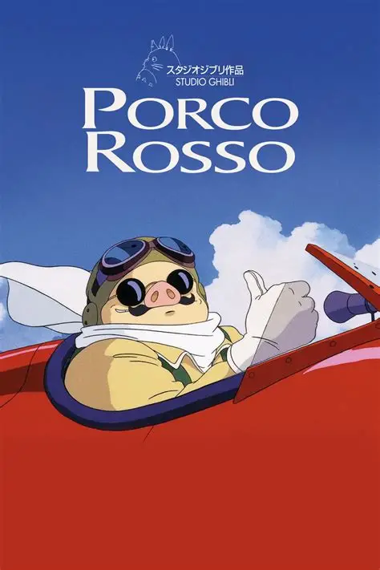

Mais do Studio Ghibli

A Viagem de Chihiro
2001

Ponyo
2008

Castelo no Céu
1986

Porco Rosso
1992
Sophie, uma jovem chapéuzeira, é transformada em uma idosa de 90 anos por uma bruxa ciumenta. Em sua jornada para quebrar a maldição, ela encontra Howl, um misterioso mago que vive em um castelo ambulante, e se envolve em uma guerra entre reinos enquanto descobre o verdadeiro significado do amor e da beleza interior.
Sophie Hatter vive uma vida pacata trabalhando na chapelaria da família até ser amaldiçoada pela Bruxa do Deserto, que a transforma em uma senhora de 90 anos. Em sua busca por uma cura, ela conhece o misterioso mago Howl e seu castelo ambulante, movido pelo demônio Calcifer. Enquanto tenta quebrar sua maldição, Sophie se envolve na guerra entre dois reinos e descobre segredos sobre Howl, que está fugindo de suas próprias responsabilidades. Juntos, eles aprendem sobre amor, coragem e aceitação em uma aventura mágica que desafia as aparências.
Diretor: Hayao Miyazaki
Roteiro: Hayao Miyazaki
Baseado em: Romance de Diana Wynne Jones
Produção: Studio Ghibli
💖 Transformação e beleza interior versus aparências
⚔️ Crítica ao militarismo e guerra
🏰 Magia como metáfora para responsabilidade pessoal
👵 Envelhecimento e aceitação de si mesmo
🔥 Relação simbiótica entre humanos e natureza
🎩 Crítica ao consumismo e vaidade
Áudio: Japonês • Português • Inglês
Legendas: Português • Inglês • Espanhol
Qualidade: 4K Ultra HD
Formato: 16:9 Widescreen
Duração: 119 minutos
Trilha Sonora: Joe Hisaishi
Indicação: Oscar de Melhor Animação (2006)
2001
2008
1986
1992